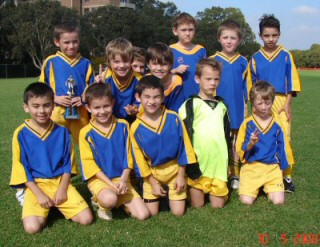
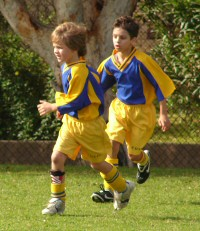

| Match Report - 10 May 2008 |
|
|
|
|
|
|
|
| U6 Green A |
North Ryde 4 - All Saints Hunters Hill C 1

|
|
|
|
The Under 6A's played the All Saints Hunters Hill C team. This was a great
match with all of the players showing skills that they had learnt at training.
Matthew from the B's joined our team today and had a great game. Chris was a
runaway again in taking the ball and forging ahead, missing a number of goals
by centimetres. Chris scored 1 goal, Cooper 1 goal and Elliot 2 goals. Gus
was there with the back pass that saved a couple of goals. The team is coming
together and it is great to see the players taking a position on the field.
Chris seemed to relish the forward position and Elliot kept dropping back to
defend. Cooper and Zac tended to be the feeders and wing area players. It is
great to see their skills develop week by week. Our player of the week is
Cooper.
- Ian Cunningham (Manager)
|
|
|
| U7 Green |
|
North Ryde Koalas - Gladesville Sharks A
|
|
|
|
This game had everything... ball skills, great attack, solid defence and two
very evenly matched teams having a great time and putting on a fantastic
exhibition. The game started at a frantic pace with the ball going from end
to end. The Koalas found themselves ahead after only a few minutes through the
boot of Jarvis, who once again turned in an absolute blinder. As usual wherever
the ball was, Jarvis was sure to be there.
As the game went on, it was easy to see that the two teams were going to fight
out a nail biter with both teams going goal for goal. James, Jack and Daniel
were terrific all game. There were a number of tight and physical tussles in
the mid-field, which we came out on top of due to the determination of these
guys. Jaiden was great in attack and often got back to help out his mates when
the heat was on at the back... even when he suffered a leg injury, he was keen
to get back out there and help out.
Our player of the match this week was Charlie, who
not only saved the day on a number of occasions at the back, but often set up
his attacking team mates on long runs with decisive passes under pressure.
When he decided to dribble the ball upfield himself he was just about
unstoppable!
Gary (coach) and David (asst coach) were great on the sideline with their
encouragement as was the ultimate professional manager, Lisa, who didn't miss
a beat with her timely replacements (although she needs to get her email
fixed!)
Can't wait for next week!
- Paul Bonaventura
|
|
|
| U8 Blue |
|
North Ryde 2 - Gladesville Ravens 0
|
|
|
|

Who'd have thought that winter was fast approaching? The most beautiful of
autumn days set the scene for our match with Gladesville Ravens at Meadowbank.
We went into the match with the bare minimum 9 regular players after
Tom O had a dispute with his bike that left him
with 7 stitches to his leg. Get better soon Tom. To help out,
Oscar and Matthew from
our sister NRS under 8's joined us for the morning, thanks guys! You both
fitted in really well and your help was appreciated greatly. The guys really
appreciated having two able sub's to call on when their legs got a bit tired.

North Ryde spent most of the first half in our opposition's half and the guys
really played well. Great dribbling and passing was on display from
Adam, Charlie,
Shannon and David.
Jack was fast and keen all day.
Tom H took control at the back and was ably assisted
by Eli who drifted between attack and defence.
Patrick returned after a short holiday and his
dribbling and passing was excellent. Christopher
grabbed the keeper's jumper for the first half and made two very good W-kicks.
The Ravens defence was very solid throughout and we were made to work very
hard for our two goals. Pleasing from my point were the skills on display and
the effort put in. Only surpassed by the obvious fun you were having out there
(and that's what it's ALL about).
Eli took the keepers kit for the second half and
was his usual safe self, making some excellent long w-kicks. Player of the
match Shannon decided to hit the goal post really
hard with his rear end, kicking the ball safely off our goal line. What a
great save that turned out to be! Adam's dribbling
past player after player was a sight and Charlie's
dribbling and switching play was excellent.
Christopher's tacking in the second half was hard
and well timed. Tom H keeps shining with the ball
at his feet and reading the play beautifully. David
ran himself ragged and helped out well in defence and was always a threat when
attacking. Patrick looked as though he'd never been
away and slotted straight back into the team showing his usual talents. And a
busy Jack was both fast and skillful the entire match.
Thanks to Mark H for doing a great job helping and with the whistle. Thanks
also to the boisterous supporter group of mums, dads, family and friends who
made it out to Meadowbank. Your attendance, support and loud voices helped to
make it a Saturday autumn morning to remember.
- Tony Borg (coach)
|
|
|
|
|
|
It was Saturday and like most dads, I started to think about sport. Yes
there's a game on, and WHOOPS almost forgot Mothers Day as well. Hope the
kids have thought about Mum. The boys, no, but yes for the daughter, what
a great little girl she is. It started me thinking about the differences
between boys and girls, from which adult did the child get particular genes
or traits!
I pulled out the latest edition of
The British Medical Journal which just happened
to have an article on the Human Deoxyribonucleic (DNA) and the relationship
to physical & emotional gene sequencing, very heavy reading, I'll tell you.
But what it did say in very simple terms was, as well as girls being made
of sugar and spice and all things nice, it was the Mother's chromosomes that
provided both the nucleotide & amino-acid sequences of proteins, which are
translated collectively as the genetic code. Now, within these codes is what
every Dad didn't want to hear - a kid's sporting abilities, including all
gross motor skills, are from their MUM
Apparently the good looks come from the male codes. Well it becomes pretty
obvious once you know these things and just look around at the good-looking
Dads on the sideline. So all you Mums can celebrate a SPECIAL Mothers Day,
knowing you're responsible for the Wildcatz
great skills and for their achievements so far, not forgetting Tess's input.
Another woman of course, well there you go!
It was the first time that we've had all 14 girls available for a game and
they were itching to get on the field. A quick reminder from Tess about
calling SQUARE, LINE & SWITCH and the girls were ready to play. The opposition
were in for a shock, and as soon as the whistle blew the girls were on fire.
They immediately pushed the attack down the field, ever closer to West Ryde's
goals. NR created shot after shot on the goals, some successful and a lot just
off target. This kept the goalkeeper busier than a kid in a candy store on
open day.
West Ryde's Coach (not one of the nicest people I've met) passed the comment
that the little goalie was the best player in the team but had been restricted
to the goalies job because of a knee injury; it didn't seem to slow her down,
she was very quick too - cut the ball off and stopped many of the attempted
shots on the goals.
The game was almost entirely in West Ryde's area. In the first half the only
exception was when a WRR's girl made a break. Goalie Karagh (KARZEE) moved
off the line towards the attacking player, almost to the edge of the penalty
box and made contact with the ball. With both girls falling to the ground,
the ball curved around hitting the inside edge of the post, just rolling over
the line. You could see Karagh's body language change from being on a high,
to the deepest depths of low, even though she had almost succeeded in
stopping the attack. It's no wonder, not too many of the girls really want
to be the goalie!
Meanwhile, one of those good-looking blokes I mentioned previously (no it's
not Ian, Alex or Pete) but John, Stef's dad, was standing on the sideline.
I had only just finished welcoming John to his first game for the season,
telling him how good the team had been playing and of Stef's newfound
commitment. John had given me a smile to indicate his concurrence when Stef
SMACKED in a superb goal. I'm sure John's pulse rate lifted at that moment
because he looked at me and with restrained exuberance, a nod of his head,
and said 'not bad, not bad'.
I'm certain it was Stef's first goal in a couple of years of playing soccer
and Dad was there to see it. I wonder if it also counts as a Mothers Day
present for Milly? (Interestingly, Stef scored another goal in her PSSA game
the following Friday)
Both Jemma and Sophie showed their ability to score in any situation and even
while surrounded by what seemed like all 11 of West Ryde's players and most
of our girls in the penalty box. They were each able to HAMMER in a shot with
consummate ease, putting the score at 3-1 in our favour. An indication of the
Wildcatz dominance during the first half was
reflected in the match statistics, which included West Ryde having to take 5
goal kicks, NR being awarded 4 corners kicks and 3 goals, while WRR's only
adventure into our half of the field produced their one lucky goal.
Half time and a reshuffle of the players meant Amany was our 2nd half
goalkeeper. Even with the repositioning of our players, WRR's were given very
limited opportunities to escape from their own half. The
Wildcatz controlled ninety-nine percent of play,
however WRR's made 2 breakaways similar to the first half. Amany showing
complete disregard for her own wellbeing, on one occasion lunging at the ball,
sending the WRR player tumbling to the ground. This is Amany's first season,
but she has shown a tremendous passion and desire to improve with every game,
enjoying every moment along the way.
The Wildcatz continued to attack the WRR's
goals with Rokayah, Lee, Emma, Mia, Paulzee and Gaelyn all working extremely
hard to ensure our strikers were given every chance to score more goals. With
the ball being moved across the goalmouth from one side of the field to the
other, the opposition's defences were overwhelmed with Jemma finally scoring
her 2nd goal of the match.
At the completion of the game the WRR's coach made the comment to the girls
and Tess that the Wildcatz were a 'good team'.
Considering his team had just been beaten 4-1 you need to really understand
and respect what he is implying; and that is, the girls played fairly,
without any rough and tumble tactics, they had structure which allowed them
to pass the ball around and gain easy yards and they are a team, not just
one or two girls that dominate play but 14 girls with skill, a competitive
drive and athletic ability.
This week in the team there were three girls, Bhenita, Stella and Ellen who
showed they have stepped up to the next level of confidence and involvement.
They are showing that it doesn't matter which position they play, they are
able to master the challenges and set a new personal standard. Well done
girls you are really developing into AWESOME players and very soon you will
feel the excitement of scoring goals for your team.
It was a good game for the girls and a great Mothers Day present for the
Mums, beats breakfast in bed any day. If any Dad would like to borrow my
copy of the BMJ to check out genetic coding just let me know. Can't wait
until I read about D.I.Y. CLONING in next month's issue. NR might have some
HOT under 6 teams soon!
- David Burn
|
|
|
|
|
|
Well first of all congratulations boys on a truly determined effort last
Saturday, everybody should be pleased with the contribution they made on
the day which was a much improved Team effort.
This was one of those occasions that the great Rugby League coach Jack Gibson
was referring to when he said "Sometimes winning isn't about the scoreboard".
Last Saturday you were all winners by virtue of your never say die attitude,
and scoring the final goal of the game in the final minute.
Overall the team competed well in all positions, and the game swung on goals
being scored following breakaway situations created by one or two particular
players from the opposition. An unlucky own goal with another goal deflecting
in off the post from a free kick were typical of the team's luck on the day.
The score could have been much worse if not for some determined defence and
some great saves by the goalkeepers, one of Sam B's saves in the second half
was outstanding and exemplified the courage of the team on the day. On the
other hand with an ounce of luck we certainly had opportunities to score goals
ourselves however the ball just did not run for us on the day.
Lewis B was a real terrier and harassed the opposition unrelentingly in attack
and defence irrespective of their size. Well done Lewis.
This game showed improvements in many areas including communication,
determination, and commitment reflecting the work that you put in at training
last Tuesday, and although the result did not go your way this time your
efforts will be rewarded in the very near future if you continue to put in
as wholeheartedly as you did last week.
- Bill Greer
|
|